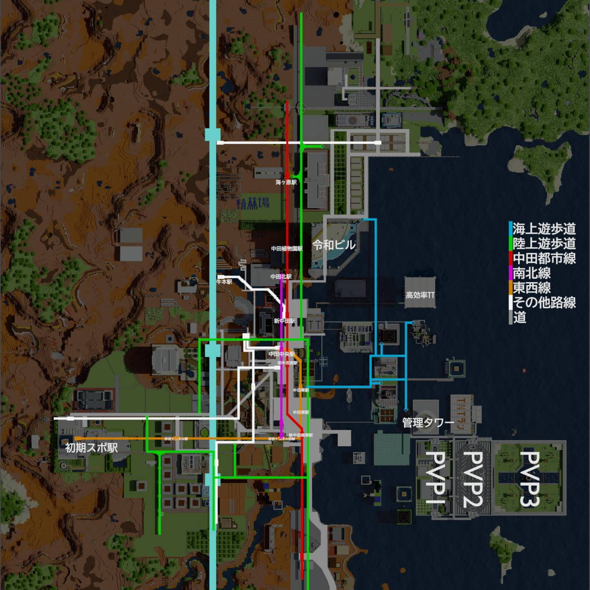

たっかーサーバーへようこそ
JapanMinecraftServer
たっかーサーバーは主にサバイバルを楽しんでもらうサーバーです
洞窟を探検したり家を建てたり初心に帰って楽しみましょう
建築が苦手な方、面倒な方はワールド内には既におしゃれなタワーマンションや家などが建っているので、
ダイヤを貯めてマンションの所有権を手に入れちゃおう！
マグマダイブするのが怖い？大丈夫！アイテムは落とさないようになってます！
その他にも生活を便利にするプラグインがたくさん入ってます！
また、別にクリエイティブになれる専用ワールドやPVPができる会場にTNTラン会場などがあるので、
サバイバルに飽きてしまった方は、そちらでもお楽しみいただけます！
することに迷ったら・・・
まずは家を建てましょう。建築に自信のある方は植林場や共用倉庫などを使って建築しましょう。
建築が苦手な方でも安心！このサーバーでは家が買えます！
買うためには資源ワールドでダイヤを集めよう！
サバイバルに飽きた方はクリエイティブ専用ワールドでインベントリが別枠扱いで好きなだけ建築ができちゃいます！
PVP勢やミニゲームが好きな方用にPVP場やTNTラン、アスレチックがあります！
果たして主たちに勝てるか！？
このサーバーは基本サバイバルなのであとは皆さんの自由です！
他のサーバーでは保護でできなかったマグマや火、トロッコを使ったものや
言ってくださればTNTキャノンも許可しちゃうかも！？
メインワールドの地図です！観光だけの方もぜひ！

建築が苦手な方でも安心！このサーバーでは家が買えます！
買うためには資源ワールドでダイヤを集めよう！
サバイバルに飽きた方はクリエイティブ専用ワールドでインベントリが別枠扱いで好きなだけ建築ができちゃいます！
PVP勢やミニゲームが好きな方用にPVP場やTNTラン、アスレチックがあります！ 果たして主たちに勝てるか！？
このサーバーは基本サバイバルなのであとは皆さんの自由です！
他のサーバーでは保護でできなかったマグマや火、トロッコを使ったものや
言ってくださればTNTキャノンも許可しちゃうかも！？

たっかーサーバー公式ツイッター
たっかーサーバー運営の公式ツイッター